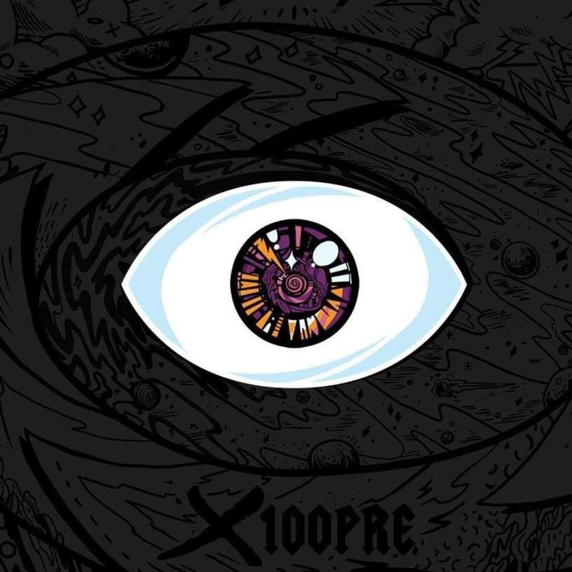
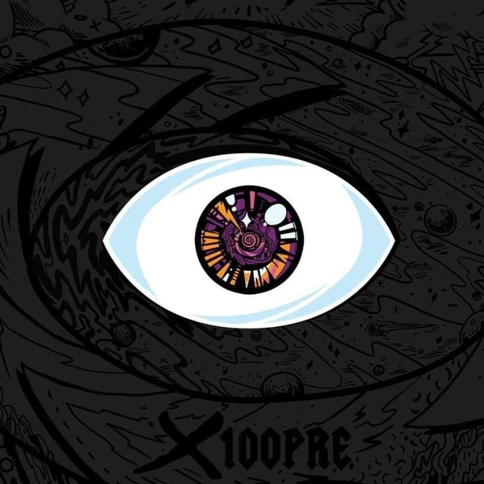

X100PRE
2018
Bad Bunny con 'Un Verano Sin Ti' es No. 1 en Billboard
Escuchar Ahora
Benito Antonio Martínez Ocasio, más conocido como Bad Bunny, es un joven cantautor de música urbana, rapero y compositor de trap, rap y hip-hop en español. Nació el 10 de marzo de 1994 en San Juan (Puerto Rico), y a pesar de su amor por la música desde que era niño, nunca tomó clases ni estudió ningún instrumento. Aprendió y perfeccionó su talento por su cuenta hasta convertirse en un artista polifacético que canta y escribe sus propios temas.
Comenzó a crear canciones y subirlas a YouTube y compartirlas en las redes sociales, donde su base de seguidores comenzó a crecer. A mediados del 2016, Bad Bunny se une a Hear This Music, compañía discográfica que lanzó “La Ocasión,” himno de la música Trap. Con el respaldo de Hear This Music, Bad Bunny ha publicado sencillos de gran éxito tales como "Diles," "Soy Peor" o "Tu No Vives Así”, entre otros. Además ha estado nominado a varios Grammy Latino y ha colaborado con artistas de primer nivel del panorama internacional.
Con una corta pero impactante carrera, Bad Bunny ha tenido un enorme éxito, ya que ha conseguido que su música no solo sea escuchada en su Puerto Rico natal ni en Latinoamérica, sino también por todos los Estados Unidos y Europa. Todo esto convierte al portorriqueño en uno de los artistas más importantes de género urbano y uno de los pioneros del Trap Latino.
Enlaces
2018
2020

2020

2020

2022

Un verano sin ti es el quinto álbum de Bad Bunny. Fue lanzado el 6 de mayo de 2022 por Rimas Entertainment, luego del lanzamiento de su disco anterior El último tour del mundo (2020). El álbum contiene veintitrés pistas y cuenta con las colaboraciones de Chencho Corleone, Jhay Cortez, Tony Dize, Rauw Alejandro, Bomba Estéreo, The Marías y Buscabulla.
Un verano sin ti, un éxito comercial y de crítica, debutó en la cima del Billboard 200 de Estados Unidos, marcando el segundo álbum número uno de Bad Bunny y el tercer álbum en español en encabezar la lista. Recibió dos nominaciones en la 23 Entrega Anual de los Premios Grammy Latinos, por "Álbum del Año" y "Mejor Álbum de Música Urbana".